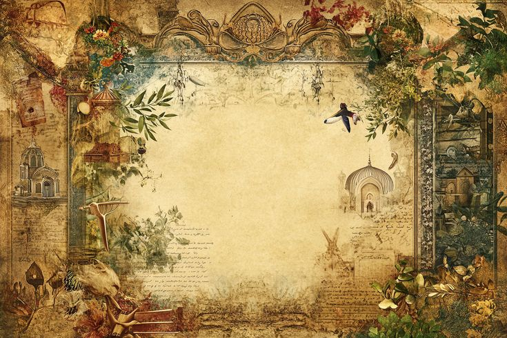

Prompt 1
A scribe in the Library of Alexandria hides a scroll in her sleeve.

Historical
Ground your fiction in real places, people and pressures.
A scribe in the Library of Alexandria hides a scroll in her sleeve.
A telegraph operator in 1912 receives a message she cannot repeat.
A cook in Edo-period Japan feeds a stranger who changes her fate.
Two sisters run a printing press during a wartime blackout.
A mapmaker is paid to leave one island off the chart.
A young apprentice discovers his master's cathedral has a flaw.